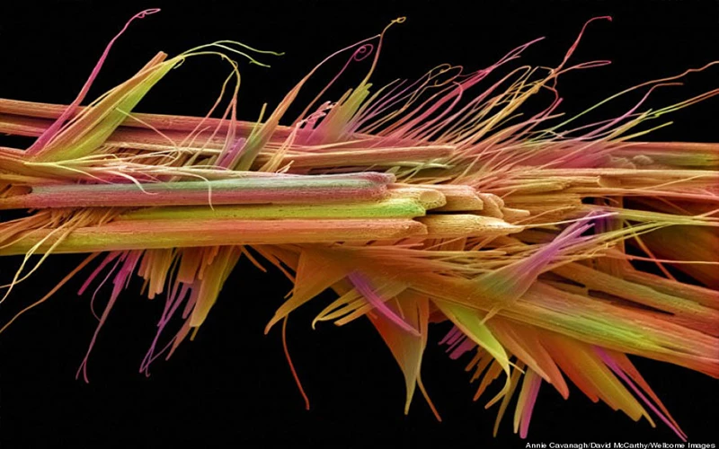

There are several known mechanisms of action to explain the effects of caffeine. The most prominent is that it reversibly blocks the action of adenosine on its receptors and consequently prevents the onset of drowsiness induced by adenosine.
Caffeine is a bitter, white crystalline purine, a methylxanthine alkaloid, and is chemically related to the adenine and guanine bases of deoxyribonucleic acid (DNA) and ribonucleic acid (RNA).
n 1819, the German chemist Friedlieb Ferdinand Runge isolated relatively pure caffeine for the first time; he called it "Kaffebase" (i.e., a base that exists in coffee).[238] According to Runge, he did this at the behest of Johann Wolfgang von Goethe.[a][240] In 1821, caffeine was isolated both by the French chemist Pierre Jean Robiquet and by another pair of French chemists, Pierre-Joseph Pelletier and Joseph Bienaime Caventou, according to Swedish chemist Jons Jacob Berzelius in his yearly journal. Furthermore, Berzelius stated that the French chemists had made their discoveries independently of any knowledge of Runge's or each other's work.[241] However, Berzelius later acknowledged Runge's priority in the extraction of caffeine, stating:[242] "However, at this point, it should not remain unmentioned that Runge (in his Phytochemical Discoveries, 1820, pages 146 to 147) specified the same method and described caffeine under the name Caffeebase a year earlier than Robiquet, to whom the discovery of this substance is usually attributed, having made the first oral announcement about it at a meeting of the Pharmacy Society in Paris."
Pelletier's article on caffeine was the first to use the term in print (in the French form Cafeine from the French word for coffee: cafe).[243] It corroborates Berzelius's account:
Caffeine, noun (feminine). Crystallizable substance discovered in coffee in 1821 by Mr. Robiquet. During the same period while they were searching for quinine in coffee because coffee is considered by several doctors to be a medicine that reduces fevers and because coffee belongs to the same family as the cinchona [quinine] tree on their part, Messrs. Pelletier and Caventou obtained caffeine; but because their research had a different goal and because their research had not been finished, they left priority on this subject to Mr. Robiquet. We do not know why Mr. Robiquet has not published the analysis of coffee which he read to the Pharmacy Society. Its publication would have allowed us to make caffeine better known and give us accurate ideas of coffee's composition ... Robiquet was one of the first to isolate and describe the properties of pure caffeine,[244] whereas Pelletier was the first to perform an elemental analysis.[245]
In 1827, M. Oudry isolated "theine" from tea,[246] but in 1838 it was proved by Mulder[247] and by Carl Jobst[248] that theine was actually the same as caffeine.
In 1895, German chemist Hermann Emil Fischer (1852 to 1919) first synthesized caffeine from its chemical components (i.e. a "total synthesis"), and two years later, he also derived the structural formula of the compound.[249] This was part of the work for which Fischer was awarded the Nobel Prize in 1902.[250]
